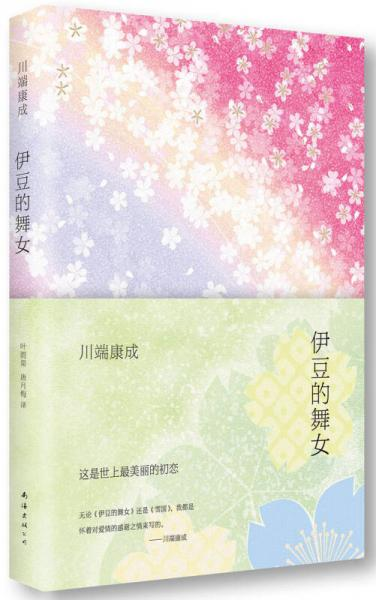

书单与书评
-
追忆似水年华
[法]马塞尔·普鲁斯特/译林出版社/2012-06/精装
马塞尔·普鲁斯特（MarcelProust，1871－1922）法国20世纪伟大的小说家，意识流小说大师。生于巴黎一资产阶级家庭，父亲是学者，母亲是富有的犹太经纪人的女儿。普鲁斯特自幼患哮喘病，大学毕业后，因健康原因，不能出户，开始撰写小说。1896年他出版了第一本小说《欢乐与时日》，1913年底出版了《追忆似水年华》的第一部《在斯万家那边》；隔年又出版了第二部《在少女们身旁》，获法国龚古尔文学奖；直至普鲁斯特去世后才完整的出版了七部。《追忆似水年华》改变了小说的传统观念，革新了小说的题材和写作技巧，被誉为法国文学的代表作。1984年法国《读书》杂志公布了法国、西班牙、德国、英国、意大利报刊评选的欧洲十名“最伟大作家”，普鲁斯特名列其中。
-
一千零一夜
方平 译/上海译文出版社/2006-08/平装
"将民间世俗的理想、圆滑的人情世故、神秘主义的梦幻、现实主义的批判性，以及命运的因果报应和道德上的惩恶扬善熔于一炉，其漫长和庞杂的故事犹如连成一片后绵延不绝的山峰。"
-
喧哗与骚动：天下大师·福克纳作品
[美]威廉·福克纳 著；李文俊 译/北京燕山出版社/2015-10/精装
"这是一位奇妙的作家，他是为数不多的能够教会别人写作的作家，他的叙述里充满了技巧，同时又隐藏不见，尤其是他的一些中短篇小说，外表马虎，似乎叙述者对自己的工作随心所欲，就像他叼着烟斗的著名照片，一脸的满不在乎。"
-
我弥留之际
[美]威廉·福克纳 著；蓝仁哲 译/译林出版社/2015-03/平装
“他是这个世界上为数不多的始终和生活平起平坐的作家，也是为数不多的能够证明文学不可能高于生活的作家”
-
礼拜二午睡时刻
[哥伦比亚]加西亚·马尔克斯 著；刘习良、笋季英 译/南海出版公司/2015-03/精装
《百年孤独》塑造了一个天马行空的作家偶象，一个对想象力尽情挥霍的偶象，其实马尔克斯在叙述里隐藏着小心翼翼的克制，正是这两者间激烈的对抗，造就了伟大的马尔克斯。《礼拜二午睡时刻》所展示的就是作家克制的才华。
-
活着为了讲述
加西亚·马尔克斯 著；李静 译/南海出版公司/2016-04/精装
“加西亚·马尔克斯的《活着为了讲述》是为了使自己的一生变得模糊起来。”
-
卡夫卡小说全集（全3卷）
[奥]卡夫卡/人民文学出版社/2014-01/精装
"这位作家表达出和巴尔扎克同样准确的现实感，这样的现实感也在故事的其他部分不断涌现，正是这些拥有了现实依据的描述，才构成卡夫卡故事的地基。事实上他所有的作品都是如此，只是人们更容易被大厦的荒诞性吸引，从而忽视了建筑材料的实用性”
-
佩德罗·巴拉莫
[墨西哥]胡安·鲁尔福 著；屠孟超 译/译林出版社/2007-10/平装
“加西亚·马尔克斯找到了可以钻出死胡同的裂缝，《佩德罗·巴拉莫》成为了一道亮光，可能是十分微弱的亮光，然而使一个人绝处逢生已经绰绰有余”
-
燃烧的原野
[墨西哥]胡安·鲁尔福/译林出版社/2010-09/平装
“实际上，胡安·鲁尔福在《佩德罗·巴拉莫》和《燃烧的原野》的写作中，已经显示了写作永不结束的事实，这似乎也是存在于一切优秀作品中的事实”
-
罪与罚
[俄]陀思妥耶夫斯基 著；耿济之 原译；陈逸 重译/上海文艺出版社/2015-07/精装
“我夜以继日地读完了《罪与罚》。陀思妥耶夫斯基的叙述像是轰炸机一样向我的思绪和情感扔下来一堆炸弹，把二十岁的我炸得晕头转向”
-
斯·茨威格中短篇小说选
[奥地利]斯·茨威格（Zweig S.） 著；张玉书 译/人民文学出版社/2006-06/平装
“我一口气读了他的《一个女人一生中的二十四小时》、《象棋的故事》和《一个陌生女人的来信》……茨威格的叙述也是陀思妥耶夫斯基的套路，上来就给我叙述的高潮，而且持续到最后
-

伊豆的舞女
[日]川端康成 著；叶渭渠、唐月梅 译/南海出版公司/2014-07/精装
“我难以忘记一九八零年冬天最初读到《伊豆的舞女》时的情景，当时我二十岁，是在浙江宁波靠近甬江的一间昏暗的公寓里与川端康成相遇”
-
鳄鱼街：布鲁诺·舒尔茨小说全集
[波兰]布鲁诺·舒尔茨 著；林蔚昀 译/广西师范大学出版社/2016-04/精装
“舒尔茨的描述是那样的精确迷人”
-
傻瓜吉姆佩尔
[美]辛格/人民文学出版社/2006-01/平装
“《傻瓜吉姆佩尔》是一部震撼灵魂的杰作，吉姆佩尔的一生在短短几千字的篇幅里得到了全部的展现，就像写下了浪尖就是写下了整个大海一样。辛格的叙述虽然只是让吉姆佩尔的人生的几个片段闪闪发亮，然而他全部的人生也因此被照亮。”
-
呐喊：鲁迅短篇小说集
鲁迅 著/天津人民出版社/2016-01/平装
“这就是我为什么热爱鲁迅的理由，他的叙述在抵达现实时是如此的迅猛，就像子弹穿透了身体，而不是留在了身体里”
-
沙之书
[阿根廷]豪尔赫·路易斯·博尔赫斯 著；王永年 译/上海译文出版社/2015-06/平装
“作为梦想家的博尔赫斯似乎深陷于不可知的浪漫之中，他那简洁明快的叙述里，其实弥漫着理性的茫然，而且他时常热衷于这样的迷茫，因此他笔下的人物常常是头脑清楚，可是命运模糊”
-
樱桃园：契诃夫戏剧选
[俄]契诃夫 著；焦菊隐 译/江西教育出版社/2016-08/平装
“《三姐妹》似乎是契诃夫内心深处的叙述，如同那部超凡脱俗的《草原》，沉着冷静，优美动人。而不是《一个官员之死》这类聪明之作。”
-
等待戈多：贝克特全集 16
萨缪尔·贝克特 著；余中先 译/湖南文艺出版社/2016-08/精装
“爱斯特拉冈和弗拉基米尔，这两个流浪汉进行着重复的等待，等待那个永远不会来到的名叫戈多的人。最后剧本的结尾还原了它的开始”
-
嫉妒
[法]罗伯-格里耶 著；李清安 译/译林出版社/2007-07/平装
“回忆、猜测和想象使众多的阅读者百感交集，他们的内心不由自主地去经历往事的痛苦、焦虑和愤怒，同时还有着恶作剧般的期待和不知所措的好奇心。他们重新经历的心理过程汇集到了一起，如同涓涓细流汇入江河，然后又汇入大海一样，汇集到了罗伯-格里耶的《嫉妒》之中。”
-
乞力马扎罗的雪：海明威短篇小说选
[美]海明威（Hamingway E.） 著；汤永宽、陈良廷 译/上海译文出版社/2006-08/平装
“白象似的群山”可以说是一览无余，这正是海明威最为迷人之处。很少有作家想海明威那样毫无保留地敞开自己的结构和语言，使它们像河流一样清晰可见”
-
红与黑
[法]司汤达 著；郝运 译/上海译文出版社/2010-08/平装
“司汤达的叙述里没有疯狂，但是他拥有了长时间的激动。司汤达具有与陀思妥耶夫斯基类似的能力，当他把一个人物推到某个激动无比的位置时，他能够让这个人物稳稳坐住，将激动的状态不断延长，而且始终饱满。”
-
大师和玛格丽特（译文经典）
高慧群 译/上海译文出版社/2017-11/精装
“在卡夫卡之后，布尔加科夫成为了二十世纪又一位现实的敌人，不同的是卡夫卡对现实的仇恨源于自己的内心，而布尔加科夫则有切肤之痛，并且伤痕累累。因此，当他开始发出一声中最后的声音时，《大师和玛格丽特》就成为了道路，把他带到现实面前。”
-
德语课
[德]西格弗里德·伦茨 著；许昌菊 译/南海出版公司/2013-03/精装
“那时候我在鲁迅文学院，我记得当时这部书震撼了我，在一个孩子天真的叙述里，我的阅读却在经历着惊心动魄，这是一本我读过以后不愿意失去它的小说”
-
斯特林堡文集
[瑞典]斯特林堡/人民文学出版社/2005-05/平装
“斯特林堡对人物和场景的夸张描写令我吃惊，他是用夸张的方式将笔触深入到社会和人的骨髓之中。有些作家的叙述一旦夸张就不着边际，斯特林堡的夸张让他的叙述变得更加锋利，直刺要害。从此以后，我知道了有一位伟大的作家名叫斯特林堡”
-
等待：十五周年纪念版
哈金 著；金亮 译/四川文艺出版社/2015-06/平装
“这部名叫《等待》的翻译小说，让我如此接近中国的历史和现实，近到几乎粘贴在一起……当我读到了太多隔靴搔痒的中国故事之后，远离中国的哈金却让我读到了切肤之痛的中国故事。”
-
欢乐（莫言作品全编）
莫言 著/浙江文艺出版社/2017-10/平装
“在《欢乐》里，莫言叙述的母亲是一个衰落了的母亲。可以说，所有人都有机会亲眼看见自己母亲的衰落。母亲从最开始的强大，从年轻有力，胸前的乳房里有取之不尽的乳汁开始，慢慢地走向衰落，乳房成了泄了气的破皮球，曾经保护着我们的母亲需要我们来保护了。”
-
最初的爱情 最后的仪式
[英]伊恩·麦克尤恩/南京大学出版社/2010-02/平装
“《最初的爱情，最后的仪式》里没有爱情的爱情，没有仪式的仪式，还有随波逐流的时光。麦克尤恩给这些无所事事的时光涂上了夕阳的余晖，有些温暖，也有些失落……”
-
失忆：失忆的年代 1
[瑞典]谢尔·埃斯普马克 著；万之 译/上海人民出版社/2012-10/平装
“《失忆》像是闹钟一样唤醒了我一些沉睡中的记忆，甚至是拿到了死亡证书的记忆。我想着就是文学的意义，这也是我喜欢《失忆》的原因。"